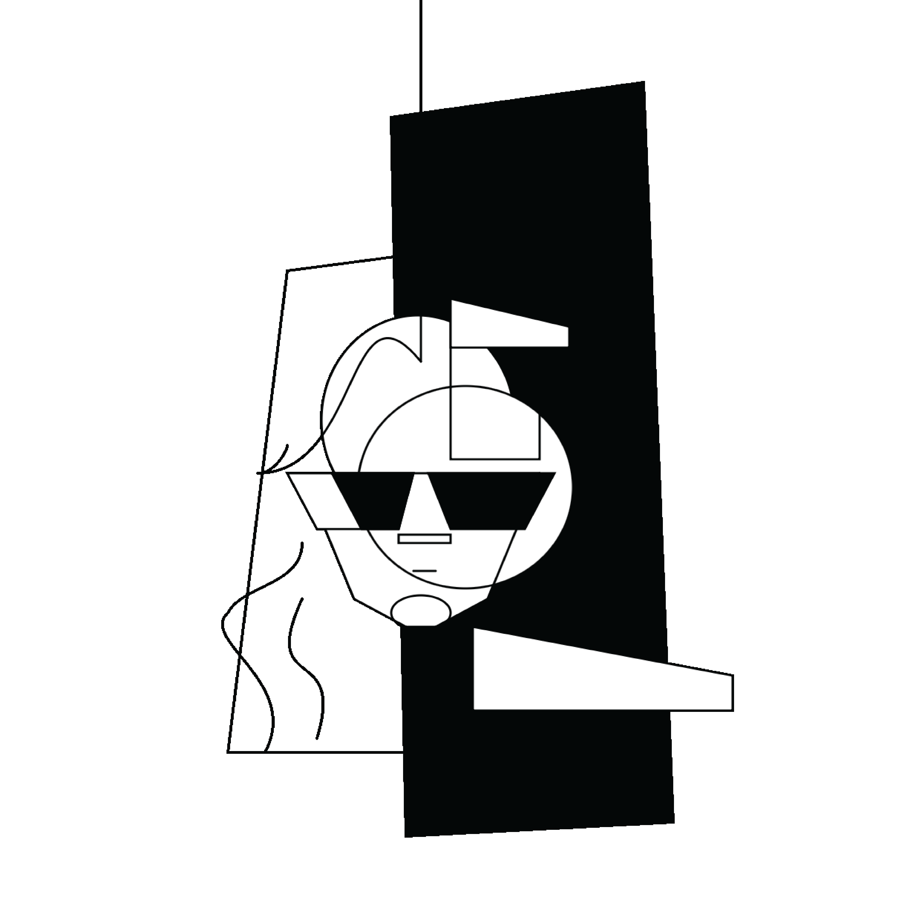

PORTRAIT
ONE OF THE TASKS WE HAD WAS TO CREATE A PORTRAIT USING A REALLY NEW WAY FOR ME, WHICH IS CREATIVE CODING.
THE VERY FIRST TRY WE HAD, WAS TO STYLE A PHOTO. I REMEMBER HOW I WAS SURPRISED THAT USING CODE YOU CAN DO
SOMETHING LIKE THIS. IT WAS ALSO UNEXPECTEDLY EASY:) WHICH UNFORTUNATELY I CANNOT SAY ABOUT THE NEXT
PORTRAIT I DID. MATH WAS NEVER MY FAVOURITE SUBJECT, AND TO BE HONEST I STRUGGLED.
WHILE I GAVE IT MY BEST SHOT, CREATING A PORTRAIT USING P5.JS WASN'T QUITE MY CUP OF TEA. AS SOMEONE WHO'S
MORE INCLINED TOWARDS DRAWING OR PAINTING, I FOUND THE PROCESS OF CODING A PORTRAIT TO BE LESS FULFILLING
THAN I HAD HOPED.
I DO UNDERSTAND THE VALUE OF EXPLORING DIFFERENT MEDIUMS AND TECHNIQUES, CODING JUST DIDN'T RESONATE WITH ME
IN THE SAME WAY THAT TRADITIONAL ART DOES.
WORKING WITH SHAPES AND LINES TO REPRESENT FACIAL FEATURES FELT LIMITING, AND I MISSED THE SPONTANEITY AND
FREEDOM THAT COMES WITH HAND-CREATING.
IN THE END, WHILE I'M THANKFUL FOR THE CHANCE TO LEARN NEW SKILLS, I REALIZE THAT I'M MORE PASSIONATE ABOUT
OTHER CREATIVE PURSUITS, WHERE I FEEL LESS STRESSED AND MORE FULFILLED.
